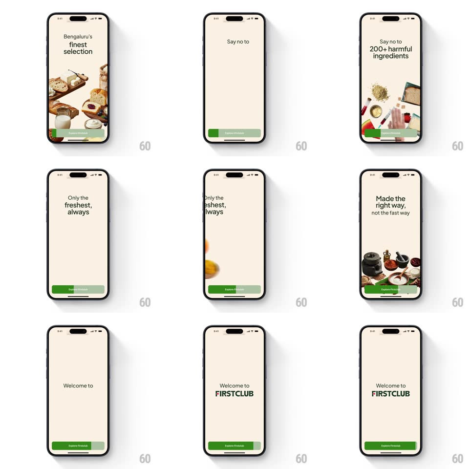

Media
Frame-by-frame

Rebuild this animation 1:1: FirstClub's onboarding slideshow - the green "Explore Firstclub" button doubles as a progress bar, filling left to right to drive each auto-advance to the next slide.

Rebuild this animation 1:1: FirstClub's onboarding slideshow - the green "Explore Firstclub" button doubles as a progress bar, filling left to right to drive each auto-advance to the next slide. ## Integration Integration: stack-agnostic spec - springs given as stiffness/damping, timed motions as duration + curve; map every value to your framework and animation library of choice. ## Scene Cream onboarding slides with food photography and centered serif headlines: "Bengaluru's finest selection", "Say no to 200+ harmful ingredients", "Only the freshest, always", "Made the right way,", "Welcome to FIRSTCLUB". A green "Explore Firstclub" pill button sits fixed at the bottom. ## Motion spec Pattern: button-as-progress auto-advance, ~4s per slide. - Progress: a darker green fill sweeps the button left to right (linear, 3.5s); at full, the slide advances. - Slide change: the photo and headline slide up and out (300ms, ease-in) while the next rises in (350ms, ease-out, 40px travel); the button fill resets instantly to empty. - Tapping the button skips straight to the final slide (fill completes in 200ms first). - Final slide: "Welcome to FIRSTCLUB" fades in with the wordmark scaling 0.9 -> 1 (spring ~340/22, 400ms); the button fills one last time and becomes tappable. ## Calibration - The fill is inside the button bounds - it never becomes a separate bar. - Headline photography and text move as one block per slide. ## Reduced motion Slides crossfade (300ms); the button shows a static fill per slide index. ## Don't miss - The auto-advance is readable off the button alone - no page dots carry the timing. - The fill resets with a snap, not a rewind.